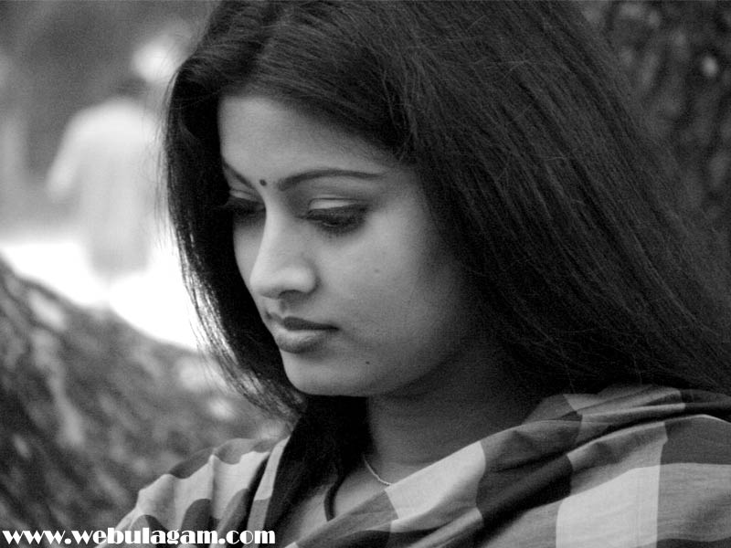

I love the debian site for its simplicity. But, still it provides what you need from it. It just says what is it, what is its latest version, the downloads, etc. You need to compare with it the red hat site and then only you would come to know the value of debian site.
There's nothing beautiful than being simple..
When talking about beautiful, yet simple, I cant refrain myself from thinking of this pic.
This is the best photograph of Sneha, in my opinion..!!!
hey Ubuntu....you are now the lucid girl...I am yet to try you out...I am still with karmic cutie...